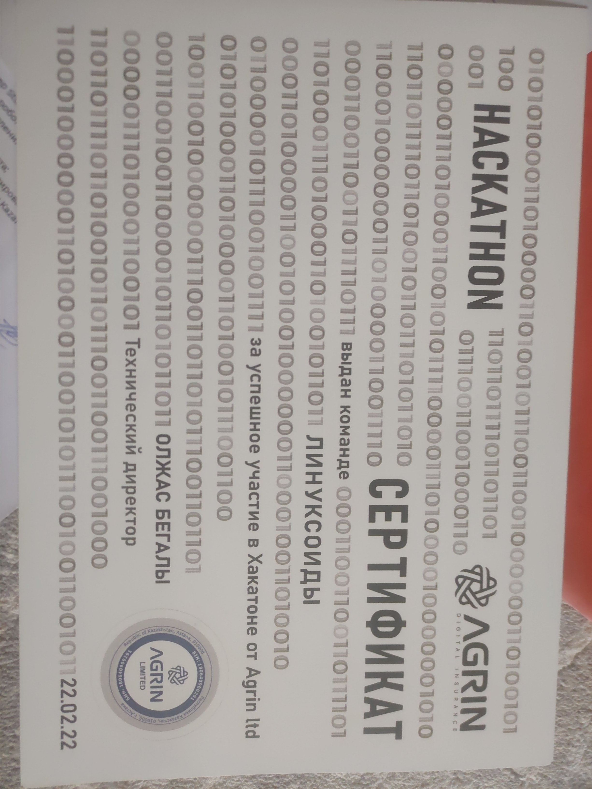
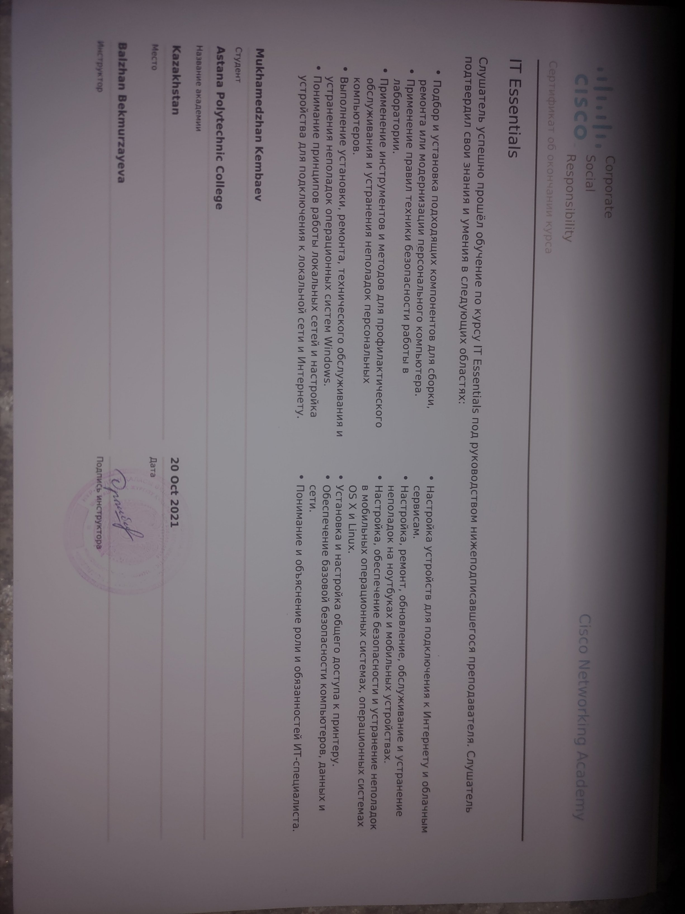
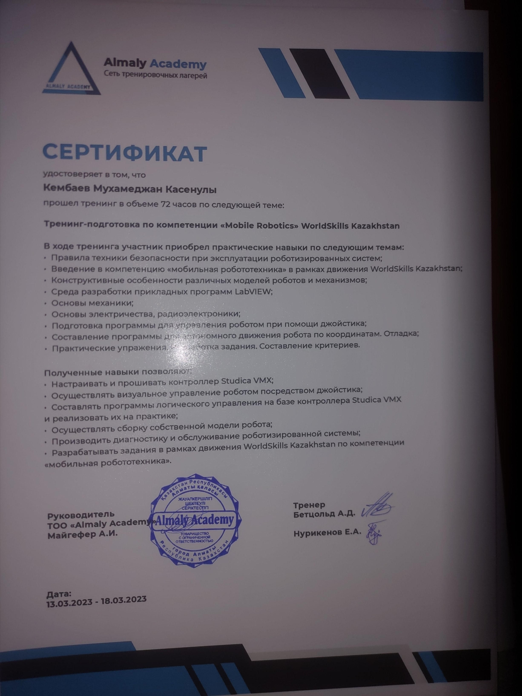
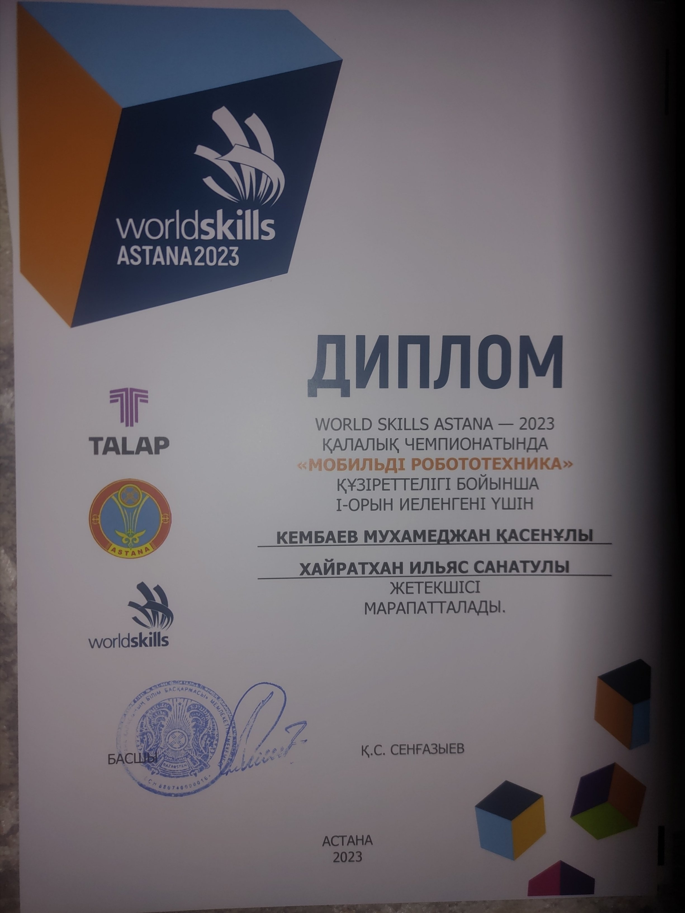

Professional Summary
Техник-программист, специализирующийся на глубоких нейронных сетях и машинном обучении. Ищу работу во второй половине дня для совмещения с учебой.
Experience
Центр квалификаций ГКП на ПХВ «Высший колледж Astana Polytechnic»
Практика, 2023- Стажёр, выполнение учебных задач в сфере IT
Education
Высший колледж «Astana Polytechnic»
2020 – 2024, техник-программистAITU
2024 – 2027Дополнительные курсы
- Coursera: Machine Learning by Andrew Ng
- Reinforcement Learning by University of Alberta
- Convolution NN, Sequence Models by DeepLearning.ai
- Сертификаты Udemy, Datacamp
Skills
- Python
- JavaScript
- C#
- Vue.js, Bootstrap, Laravel
- MS SQL, REST API, .NET Core
- CNN, LSTM, GRU, TensorFlow, PyTorch
Achievements
- 1 место в региональном чемпионате WorldSkills Astana 2023
- 1 место в Хакатоне по кибербезопасности, Караганда 2024
Certificates




Languages
Казахский, русский, английский (IELTS 5, B1-B2)
Research Papers
В 2025 году изучал научные статьи и делился ими в своём Telegram- канале t.me/arxiv_insight.
Hobbies
3D печать, изучение исследовательских работ по нейронным сетям